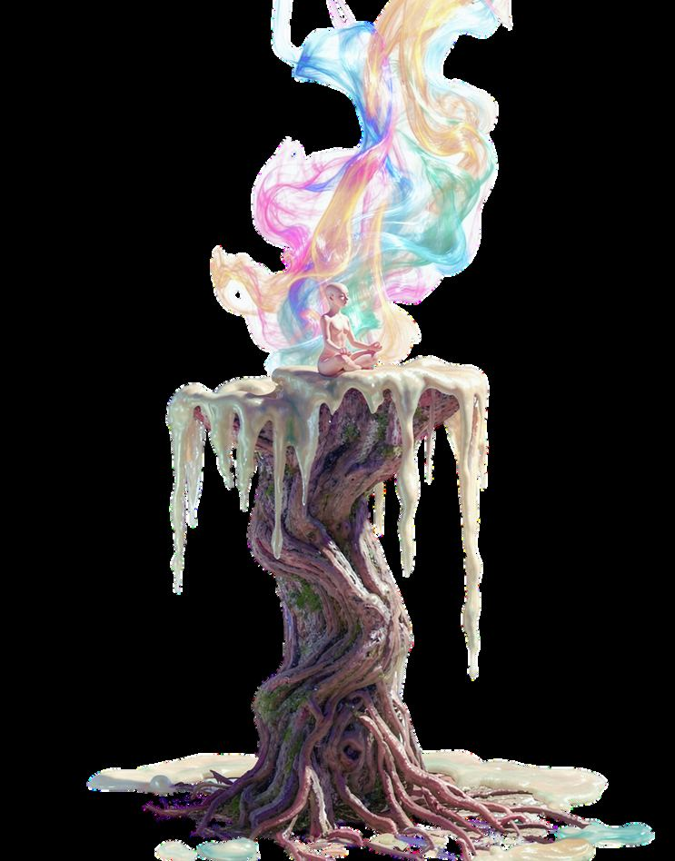
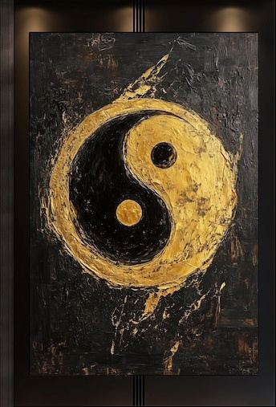
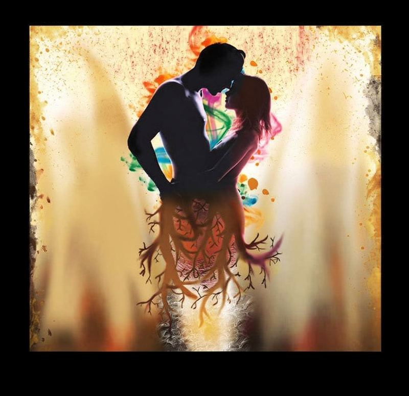
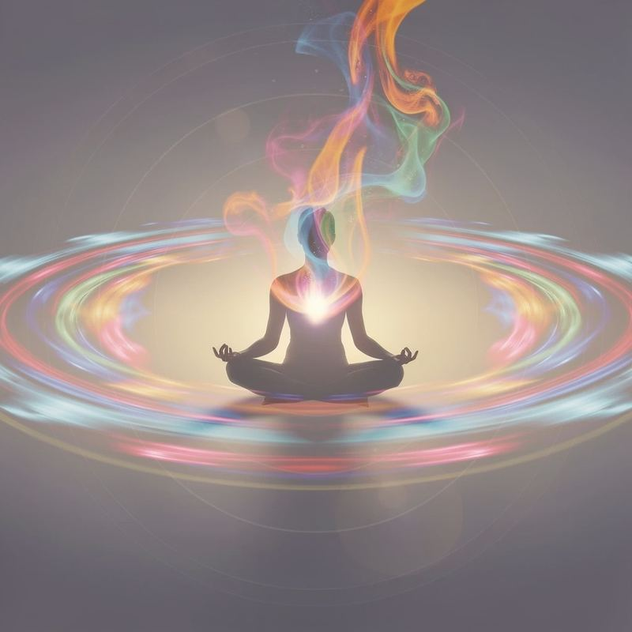
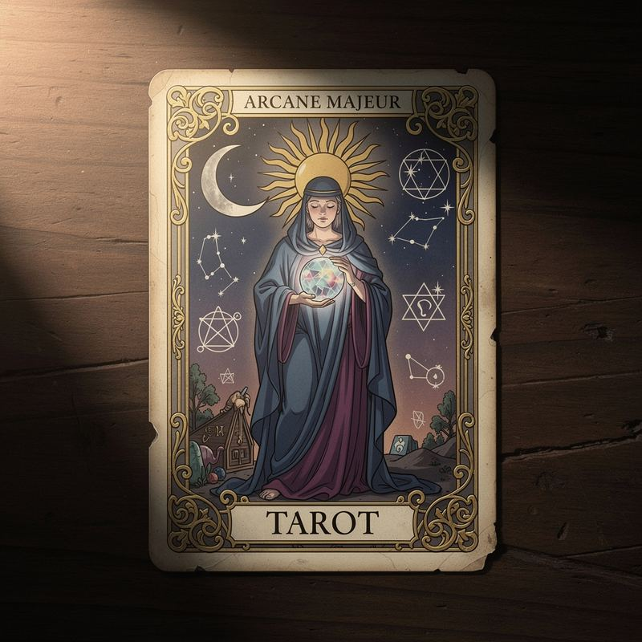
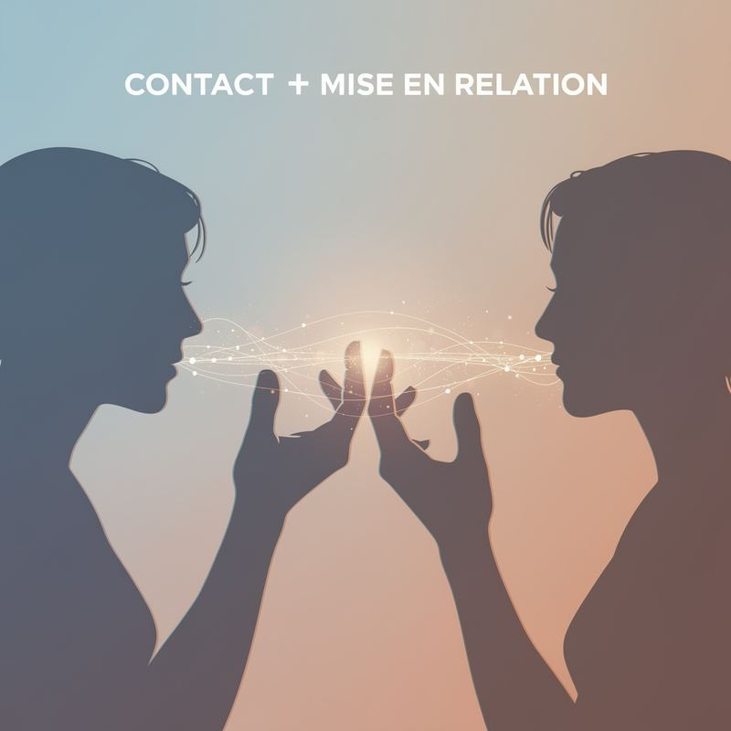
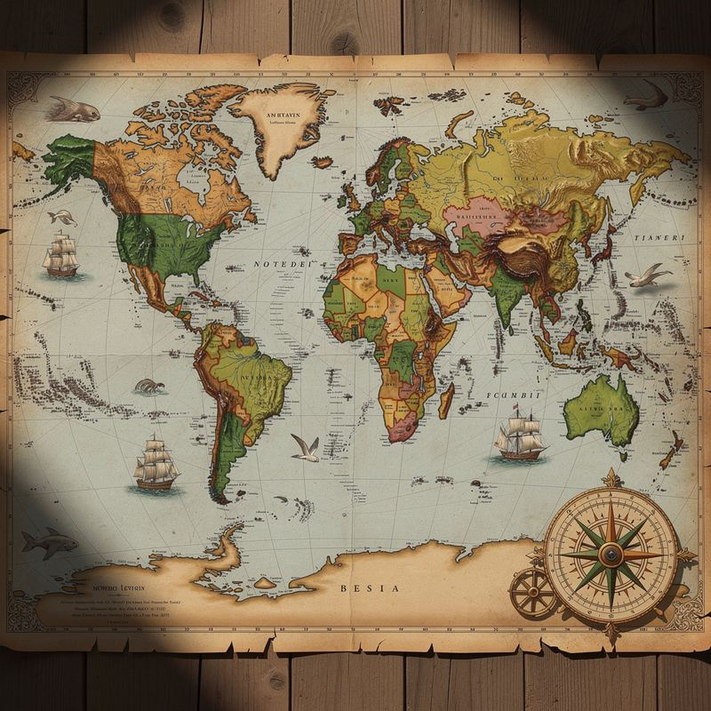

Le Temple du retour à Soi
Un espace pour celles et ceux qui ne se sentent pas compris, et qui sentent qu'il est temps de revenir à leur centre.
Casa Alma accompagne les personnes sensibles, lucides, en quête de sens, qui ressentent un décalage intérieur ou relationnel, et qui souhaitent se comprendre profondément pour vivre des relations plus justes.
DécouvrirMon chemin n'est pas né d'un savoir théorique, mais d'une traversée intérieure.

Comme beaucoup, j'ai longtemps cherché à comprendre les autres, les relations, les liens intenses, avant de réaliser que la véritable clé résidait dans la compréhension de soi.
Ce qui m'anime est simple et essentiel : accompagner celles et ceux qui se sentent incompris, en décalage, ou perdus dans leurs relations, à revenir à leur centre et à se reconnaître pleinement.
Casa Alma signifie la maison de l'âme. Un lieu symbolique où l'on peut revenir lorsque l'on s'est éloigné de soi.
Identifier sa dynamique intérieure pour mieux se comprendre et cesser de se sentir en décalage avec les autres.
Se recentrer, s'aligner, retrouver une stabilité intérieure qui transforme naturellement les relations.
Éclairer les parcours relationnels intenses, comprendre les dynamiques chaser/runner, et remettre la conscience au cœur du lien.
Développer les intelligences humaines et sensibles pour vivre pleinement qui l'on est.
La polarité de base est la dynamique énergétique dominante à partir de laquelle une personne perçoit, ressent et entre en relation.

Beaucoup de personnes ont le sentiment de ne pas être comprises, de ne pas comprendre les autres, ou de revivre sans cesse les mêmes schémas relationnels. Ces difficultés ne viennent pas d'un manque d'amour, mais souvent d'une méconnaissance de sa polarité intérieure.
Les polarités masculin et féminin ne sont pas liées au genre, ni aux rôles sociaux, mais à des forces complémentaires présentes en chaque être humain.
Identifier sa polarité dominante aide à identifier ses besoins relationnels profonds, à comprendre ses réactions, et à établir des relations plus authentiques.
Certaines relations ne ressemblent à aucune autre. Elles sont intenses, bouleversantes, et laissent une empreinte profonde.

Un couple sacré ne répond pas aux normes relationnelles habituelles. Il suit un chemin intérieur, souvent invisible de l'extérieur. Il s'agit d'un lien d'âme, d'une rencontre puissante qui agit comme un catalyseur intérieur.
Le couple sacré n'est pas là pour rassurer, ni pour combler un vide. Au contraire, il met en lumière tout ce qui demande à être vu, reconnu, guéri ou réintégré.
Ces liens appellent à un retour à soi, à une responsabilité émotionnelle accrue, et à une compréhension plus fine de l'amour comme chemin de croissance intérieure.
Revenir à soi, c'est quitter le bruit extérieur pour retrouver son axe intérieur.

Le centre n'est pas un concept abstrait. C'est un état intérieur vivant, une présence stable à soi-même au cœur du mouvement de la vie.
Être dans son centre, c'est être présent à soi, habiter pleinement son corps, sentir ce qui se passe à l'intérieur sans se laisser emporter.
L'approche Casa Alma repose sur trois piliers : l'écoute profonde, la conscience des polarités, et la reconnexion au corps et au ressenti.
Développer son potentiel ne consiste pas à devenir quelqu'un d'autre, mais à reconnaître, comprendre et activer ce qui est déjà là.
Capacité à utiliser les mots pour s'exprimer, comprendre et communiquer avec justesse.
Capacité à analyser, structurer, raisonner et résoudre de manière logique.
Capacité à percevoir les formes, les images, les espaces et à penser en visualisant.
Capacité à ressentir et utiliser le corps comme moyen d'expression et d'intégration.
Sensibilité aux sons, aux rythmes, aux tonalités et à leur impact émotionnel.
Capacité à comprendre les autres, leurs émotions et les dynamiques relationnelles.
Capacité à se connaître soi-même, reconnaître ses émotions et ses mécanismes intérieurs.
Capacité à se relier au vivant, à la nature, aux cycles du monde naturel.
Capacité à questionner le sens de la vie, l'existence et la dimension spirituelle.
Les cartes ne disent pas quoi faire. Elles aident à se souvenir de ce que l'on sait déjà, au fond.

Le tirage de cartes proposé chez Casa Alma est une lecture intuitive et consciente. Il ne s'agit pas de prédire, ni de décider à la place de la personne, mais d'éclairer, de clarifier et de recentrer.
Les cartes sont utilisées comme un outil de lecture symbolique, un support pour mettre en lumière ce qui est déjà présent intérieurement.
Chaque accompagnement commence par une rencontre consciente.
Toute demande d'accompagnement se fait uniquement par email. Partage ta situation, tes questionnements, et ce que tu souhaites éclairer.
Chaque message est lu et étudié avec attention. Il n'y a ni réponse automatique, ni parcours standard.
Un entretien téléphonique offert de 20 minutes pour poser les bases du travail et clarifier les attentes.
Entrer en relation commence par une parole juste. Le reste se construit dans l'écoute, le respect et la présence.

Toute demande se fait uniquement par email.
Je t'invite à y partager :

Le site Casa Alma est accessible en trois langues : français, anglais et espagnol, afin de permettre un accompagnement ouvert et inclusif.
Les tarifs des accompagnements peuvent être ajustés en fonction du pays de résidence, dans un esprit d'équité et de respect.
Pour les personnes résidant dans les pays hispanophones et anglophones, les accompagnements se déroulent via WhatsApp, uniquement par écrit.
Chaque accompagnement s'adapte à la personne, sans jamais perdre son essence.